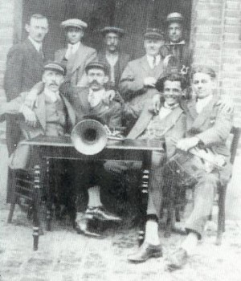
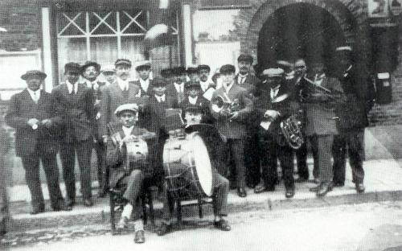
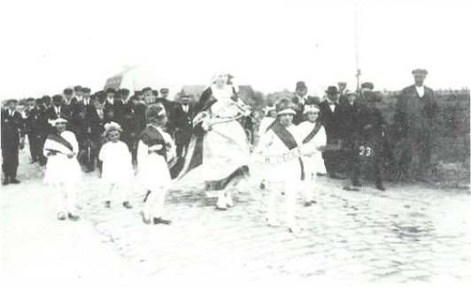
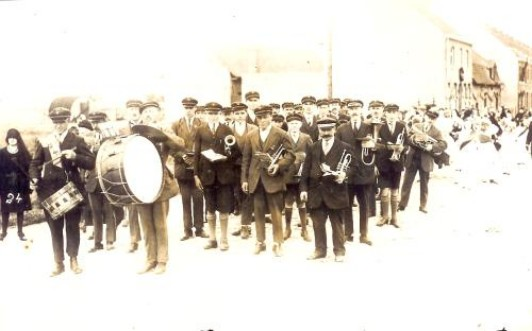
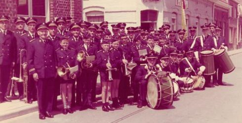

| Enkele foto's uit de beginjaren van de toenmalige fanfare. | ||
|  | ||
| De stichters van de vereniging in 1926 | ||
|  | Groepsfoto uit 1927 | |
|  | ||
| 1928 Sint Cecilia | ||
|  | ||
| De fanfare bij de priesterhuldiging in 1928 |
STICHTING
Op een winteravond in december in 1925 werd in ""'t Hof van Commerce\" duchtig gefeest, want naar het
voorbeeld van buurdorp Voormezele werd er ook in Dikkebus een muziekvereniging gesticht.
Van meetafaan was het een groot succes:de fanfare telde 40 leden uit zowel middenstand al werkliedenklasse.
Joseph Lewyllie werd de eerste dirigent en Hector Goderis de voorzitter.
Fondsen vinden was echter moeilijk en de muzikanten werden verzocht zich zelf een instrument aan te
schaffen.
Op paaszondag volgde een eerste uitstap in het dorp.
NAAM
Dikkebus heeft een vijver. Op dezelfde Kandeelavond bedacht Jozef Deconinck (schatbewaarder) de originele
naam
"de Vijverzonen".
Deze werd direct goedgekeurd en gebruikt.In 1955 nam de fanfare deel aan een nationaal marstoernooi in
Oostende.
We speelden zo goed dat we in 2e divisie belandden. Op die manier kreeg de fanfare de kans om zich
'koninklijk'
te bekronen.
Dit is te danken aan de sterke prestatie met 'de Dilbeek mars'.
BEGINJAREN
In de beginjaren waren de uitstappen meestal plaatselijk in alle wijken (Razelput, 't Zweerd, Hallebast,
Canadahoek,...).
Buiten het dorp: al sinds de eerste Bloedprocessie in Voormezele, deden we mee.
Vandaar dat onze fanfare even oud is als deze processie. Met de jaren kwamen meer buitendorpse uitstappen
(naar
zee, over de Franse grens,...).
Tegenwoordig zijn de uitstappen heel verscheiden: ernstige processies, kermissen, plechtige aanstellingen,
stoeten,...
TWEEDE WERELDOORLOG De oorlog was ook voor onze harmonie noodlottig: instrumenten gingen verloren in bombardementen, partituren verdwenen, jonge muzikanten werden opgeroepen voor het front. Gedurende 6 jaren lag elke muziekbeoefening stil, net zoals bij vele andere fanfares. De Vijverzonen en hun muziek mogen echter van geluk spreken. De Duitsers schenen toch wat respect te tonen voor ons en lieten toe dat er nog geregeld gerepeteerd werd. Wel waren alle uitstappen verboden. Dankzij de geregelde repetitie viel het korps niet uit elkaar, enkel in 1943 werden ook de repetities naderhand voor 1 jaar onderbroken. Kort na de bevrijding in september 1944 deden we een grote uitstap naar alle wijken en doorheen alle straten van het dorp. Het geteisterd dorpje kwam weer tot leven. De Vijverzonen konden weer naar hartelust musiceren zonder verdere incidenten. Al bij al heeft de 2e WO geen TE grote invloed gehad op ons bestaan. We zijn betrekkelijk gespaard gebleven in tegenstelling tot de vele muziekkorpsen in het ronde.
DIKKEBUS ONAFHANKELIJK In de beginjaren en nog lang daarna, was Dikkebus nog zelfstandig en geen deelgemeente. Met de hulp van de zogenaamde 'beschermleden' (gulle dorpsgenoten). Men ging jaarlijks rond voor een geldinzameling + men diende lidgeld te betalen als beschermlid. Ook kaartingen werden georganiseerd. Door de besparingen op het vlak van instrumenten (deze waren van de muzikant zelf) en het feit dat men nog geen uniform hoefde, zorgde ervoor dat men op het eind van elk jaar een feestmaaltijd kon aanbieden aan de muzikanten. In 1976 werd Dikkebus afhankelijk van Ieper. Even werd gevreesd dat men de dorpssubsidies nu zou verliezen, maar Ieper bleek even gul met zijn giften als het eigen dorp. Bij het 50-jarig jubileum schonk Ieper zelfs een extra bedrag van 60.000 Bef. Langzaam maar zeker werd de zaak voor de leden steeds goedkoper: lidgeld werd afgeschaft, uniform en het lenen van een instrument werd gratis.
UNIFORM
Gedurende 40 jaar stelden de leden het enkel met een kepi met daarnaast een gewoon zondags kostuum. Een
uniform
invoeren voor de ganse vereniging zou een te kostelijke zaak worden.
In 1965 kon het uiteindelijk toch veroorloofd worden:

Op zondag 20 juni 1965 kwam ons korps voor het eerst gekostumeerd op straat.
Het uniform bleef qua uitzicht tot op heden dezelfde, althans voor de muzikanten.
Vroeger waren er ook een tijd lang majoretjes en zij droegen een wit kleedje met witte laarsjes en als
hoofddeksel een blauw bolhoedje.
van FANFARE tot HARMONIE
In 2000 vierden we ons 75-jarig bestaan en tegelijk werd onze fanfare (o.l.v. Brecht D'Heere) omgevormd van
'fanfare' tot 'Harmonie'.
Dit werd feestelijk gevierd, zowel in het stadhuis als in het dorp.
TAMBOER MAJOOR
De harmonie zette een belangrijke stap naar betere straatoptredens toen Andy Pareyn in 2008 aantrad als
tamboer
majoor.
Hij neemt bij elk optreden de volledige groep onder zijn leiding en wijst met gebaren en zijn mace (zijn
stok)
de weg.
VERNIEUWINGEN
In 2011 nam Bart Lagacie het dirigeerstokje van de harmonie in handen. In datzelfde jaar ging de
instap-harmonie
van start onder leiding van Evelien Leeuwerck en Lorenzo Tuytens.
In deze groep komen beginnende muzikanten van alle leeftijden samen om hun eerste stappen te zetten in het
samen
spelen.
Enkele jaren in de instap-harmonie zorgen voor een vlotte overstap naar de grote harmonie.
Daarnaast zijn er ook steeds twee trommelgroepen actief: beginners en gevorderden.
REPETITIES
Elke zaterdag repeteren we met trommelaars en de nieuwe muzikanten van de instap-harmonie van 16u30 tot
17u30.
Daarna volgt de gewone harmonie tot 19u30. Tegelijkertijd oefenen ook de gevorderde trommelaars en de
klaroenen.
De wekelijkse repetitie is steeds een intensieve maar ook gezellige en ontspannende activiteit.
Er is zowel plaats voor het voorbereiden van kwaliteitsvolle muziek als voor een gezellige babbel aan de
bar.
MUZIKAAL JAAR
Het muzikaal jaar van de harmonie concentreert zich tussen Pasen en
November.
Gespreid over het jaar brengt onze Harmonie twee concerten waarbij de muzikanten een gevarieerd gamma aan
muziek
kunnen brengen dat in het oor ligt voor jong en oud.
Hoogtepunt van het jaar is het tuinconcert, de eerste zondag van juli. Daarnaast staan de Vijverzonen ook in
voor straatconcerten en stoeten.
Hierbij worden we ondersteund door het trommelkorps.
De laatste jaren worden we ook steeds vaker gevraagd voor officiële huldigingen zoals V-day in Ieper en voor
taptoes.
VERNIEUWING UNIFORMEN
Sinds 2012 is er vernieuwde aandacht voor het uniform.
Iedereen kreeg een nieuwe kepi aangemeten en de uniformen worden stelstelmatig vervangen zodat iedereen er
altijd piekfijn uitziet.
90 JAAR BESTAAN
In 2015 bestond de harmonie 90 jaar. Dit werd uitgebreid gevierd met extra activiteiten zoals een
twee-daagse
naar Parijs, een extra-feestelijk tuinconcert en een verbroedering met de harmonie van Elverdinge.
KLAROENKORPS
Op het einde van 2015 startte de harmonie met een klaroenkorps. Deze muzikanten bieden versterking aan de
trompetsectie bij straatoptredens.
Ze brengen met hun specifieke geluid ook een extra klanksoort aan in de groep.
Ondertussen groeide de groep muzikanten uit tot een echte “Vijverfamilie” met veel zonen, maar ook met veel
dochters.
Momenteel kent de groep zo’n 90 spelende leden waarvan de jongste pas 7 jaar is. De harmonie is dus een
muziekvereniging waarin jong en oud zich thuis voelen.